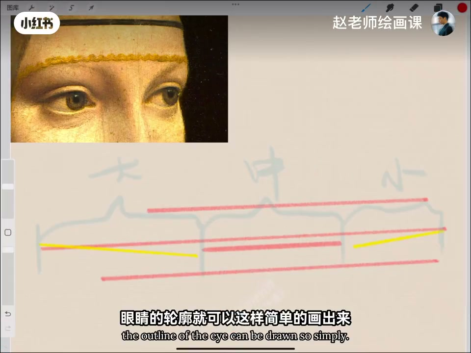
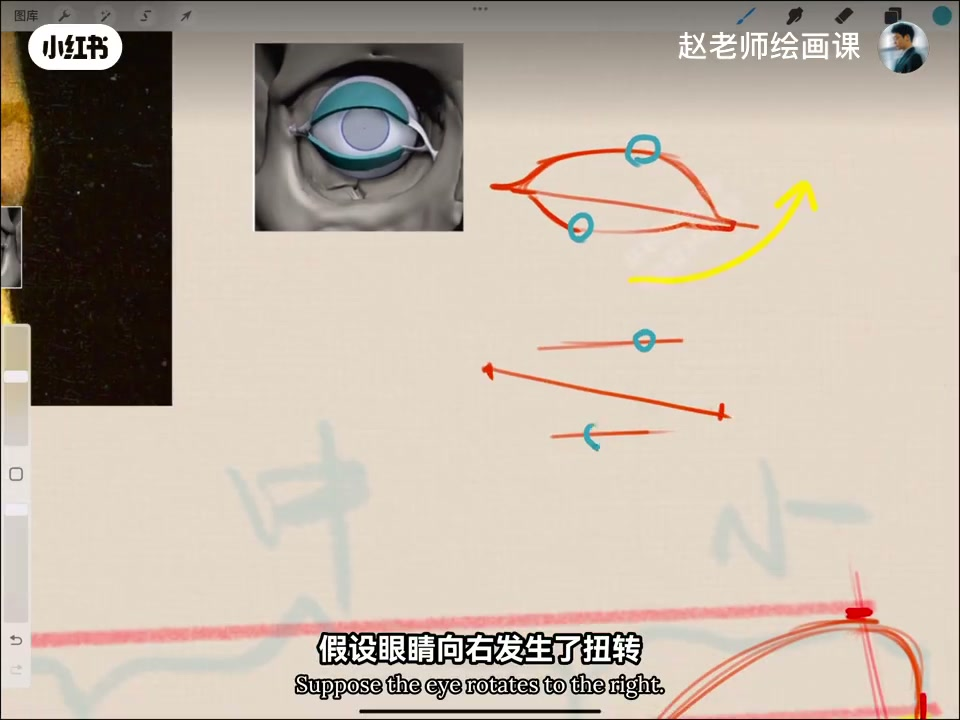
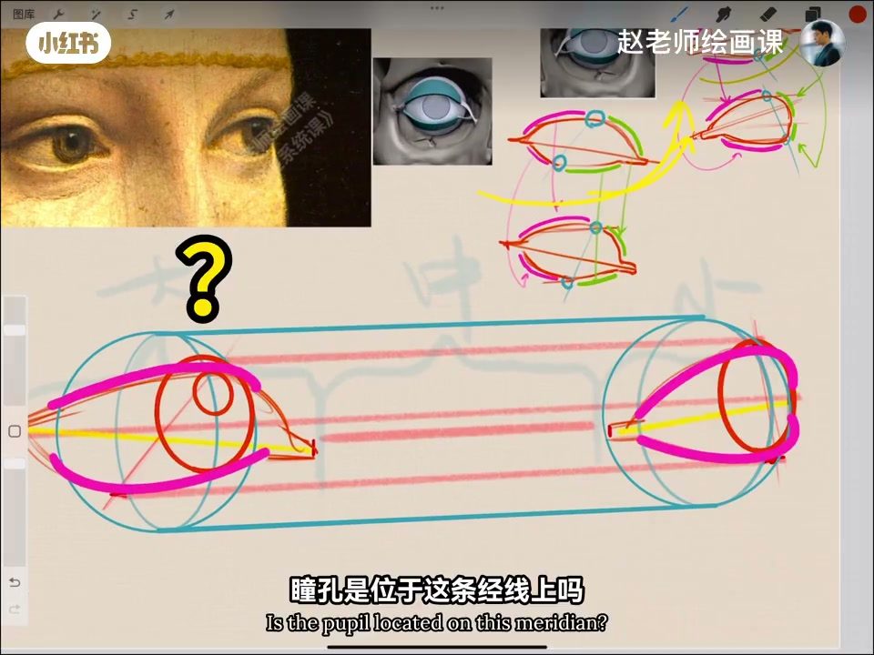
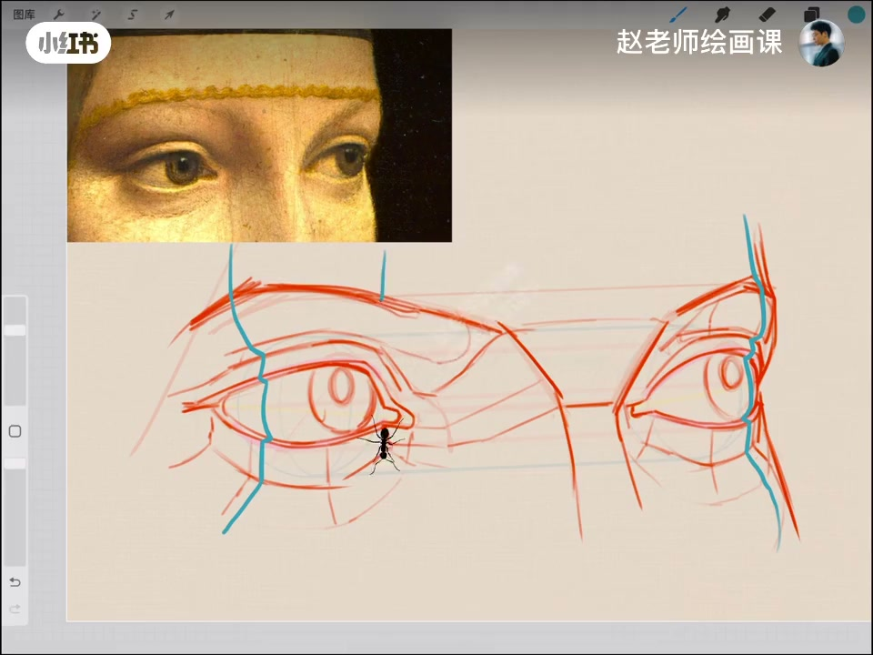

内容要点
专案「向大师学造型」从一双大师眼睛切入：先懂面部透视，再找眼宽高四点；透视下呈大中小三段距，外眼角高内眼角低，轮廓可折线简化。扭转演示解释近大远小如何拉长与压缩。虹膜是椭圆贴球体，经线两底面弧不同；瞳孔在内凹「碗底」而非经线上——易错点。睑中间薄两端厚，衔接眉弓鼻梁脸颊；用「蚂蚁爬过路径」检验结构，光影会变丝滑。
知识结构
透视＋四点；大中小；外高内低。
拉长压缩；椭圆贴球；瞳孔在碗底。
睑厚薄；衔接；蚂蚁检验→光影易。
眼睛先锁透视与体积（扭转、球体、虹膜碗底），再用结构衔接让光影变简单。
00:00-01:00宽度四点与大中小轮廓
开场问立体精确自然之美如何做到。看这双眼睛：先理解所在面部透视，再找宽度与高度四个点位；透视呈现大中小三段不同距离，外眼角高、内眼角低也呈现出来，轮廓就可以这样简单画出来。
00:45 大中小括号与折线是直接证据。

01:00-02:20扭转透视与虹膜瞳孔
四点怎么定？假设纯正面右眼先找最高最低；眼睛向右扭转，蓝线右移致紫线拉长、绿线压缩——近大远小。左眼同理。加入眼球，眼睑线须自然贴合鼓起的球体。
按视线找贯穿虹膜、位于球体上的经线：类似圆柱两底面，两弧弧度不同；虹膜别画正圆而是椭圆。上眼穿过眼睑，下眼一般齐平。关键：瞳孔不在经线上——虹膜向内凹，瞳孔在碗底。01:01／02:05 可核验。


02:20-03:07结构衔接与蚂蚁小技巧
再观察结构：上下眼睑中间薄、两端厚；要把眼睛与眉弓、鼻梁、脸颊衔接处交代清楚。小技巧：想象几只蚂蚁从上到下爬过，路径能否呈现你画出的结构？有了透视与结构，光影会无比丝滑简单——这就是大师笔下的造型。
片尾导流造型系统课。02:40 结构检验画面。

完整转录（79段）
以下文本由 Whisper medium 模型自动转录，可能存在少量识别误差，已尽可能修正。
哈喽大家好
欢迎来到我的全新专案
向大师学造型
今天我们从这幅画说起
立体精确自然又真实之美
是怎么做到的
我们来看这双眼睛
首先我们要理解
眼睛所在的面部的透视状态
其次试着找到眼睛的宽度
和高度的四个点位
因为透视这里呈现了
大中小三段不同的距离
外眼角高
内眼角低的规律也呈现出来了
你看眼睛的轮廓
就可以这样简单的画出来
我猜肯定有同学想问
这四个点是怎么定下的
很好
我们假设一个纯正面的右眼
很快就能找到最高和最低点
假设眼睛向右发生了扭转
那蓝线会向右移动
导致紫红色的线被拉长
绿色线条部分被压缩
这是因为近大远小导致的结果
同样换到左眼
完全一样的道理
根据解剖呢
我们可以加入眼球
要确保严谨的线条
非常自然的
贴合在这个鼓起来的球体上
现在啊
我们根据女人的视线
找到那根贯穿红膜的
被于球体上的筋线
这里呢
要注意
它们是类似于圆柱的两个底面
所以两条弧线的弧度是不一样的
红膜的形状一定别画成正圆
对
它是椭圆
上眼穿过眼检
下眼呢
一般是齐平的
关键的来了
瞳孔是位于这条筋线上吗
当然不是
因为红膜是向内凹的
所以瞳孔的位置
应该是在一个碗底
这是很多人容易画错的地方
了解了眼睛的位置与透视
我们再来观察眼睛的结构
上下眼检的是
中间薄
两端厚的状态
一定要把眼睛和眉弓
鼻梁
脸颊
这些结构衔接的地方
交代清楚
一个小计小啊
请想象一下
几只蚂蚁从上到下爬过去
那蚂蚁爬过的路径
是否能呈现
你所画出的结构呢
你看
有了这些透视和结构的加持
光影就会变得无比的丝滑和简单
这就是大师笔下的造型
如果你想系统学习绘画造型
练就终身的绘画能力
我们课程见
拜拜